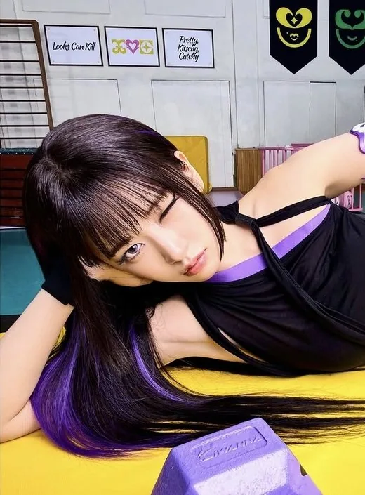
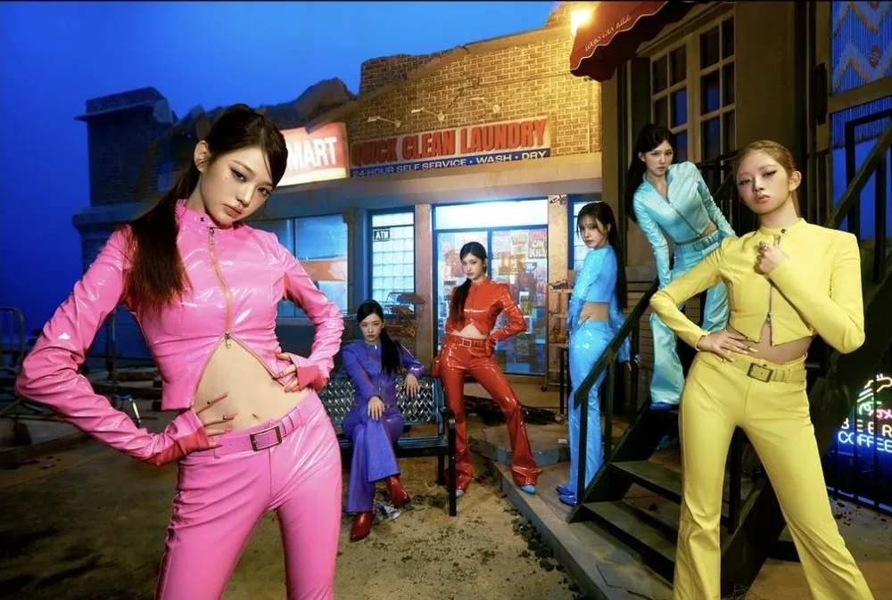
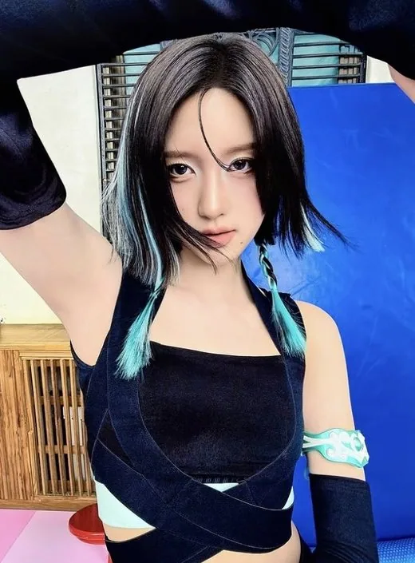
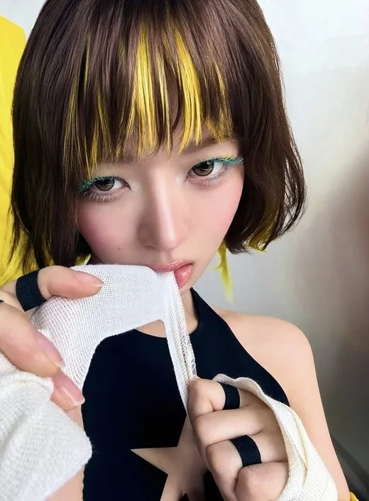
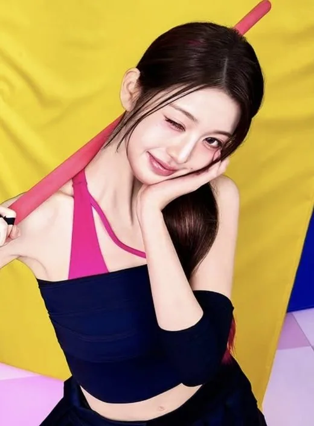
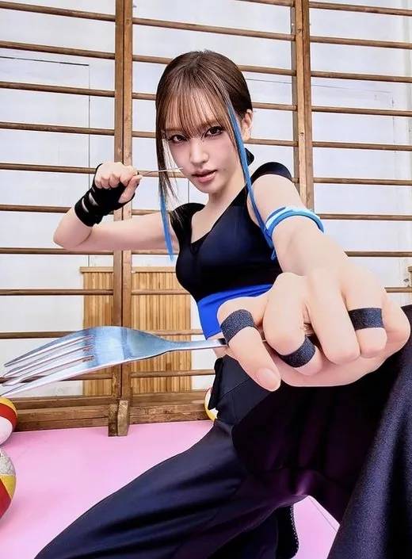
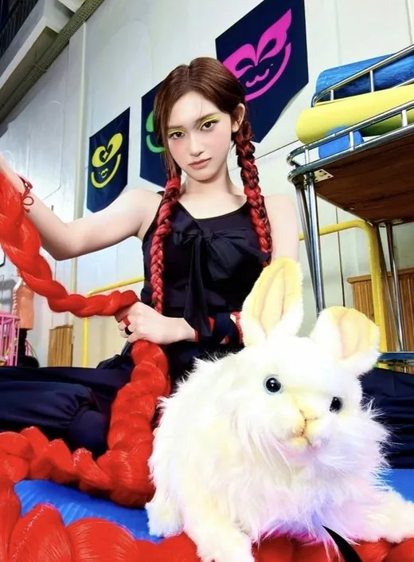

Yujin
Yujin (유진) · Leader, Main Vocalist, Main Dancer · Coréenne

K-POP
Découvre IVE et les profils de ses membres sur IBASE Asian Pop.
Ouvrir la fiche interactiveHistoire : IVE (아이브) est un girl group de 6 membres de Starship Entertainment : Yujin, Gaeul, Rei, Wonyoung, Liz et Leeseo. Il a débuté le 1er décembre 2021 avec son premier single-album « ELEVEN », a fait ses débuts japonais le 19 octobre 2022 et ses débuts anglais le 19 janvier 2024. Le nom « IVE » vient de « I HAVE » et exprime la confiance de montrer ce que les membres possèdent déjà. Le nom du fandom, DIVE, vient du salut du groupe. Salut officiel : « Dive into IVE! Hello, we are IVE! »
Débuts : 1er décembre 2021 avec le single-album « ELEVEN » ; début japonais le 19 octobre 2022 ; début anglais le 19 janvier 2024
Agence : Starship Entertainment

Yujin (유진) · Leader, Main Vocalist, Main Dancer · Coréenne

Gaeul (가을) · Main Dancer, Lead Rapper, Sub-Vocalist · Coréenne

Rei (레이) · Main Rapper, Sub-Vocalist · Japonaise

Wonyoung (원영) · Vocalist, Dancer, Visual · Coréenne

Liz (리즈) · Main Vocalist · Coréenne

Leeseo (이서) · Lead Dancer, Sub-Vocalist, Visual, Maknae · Coréenne